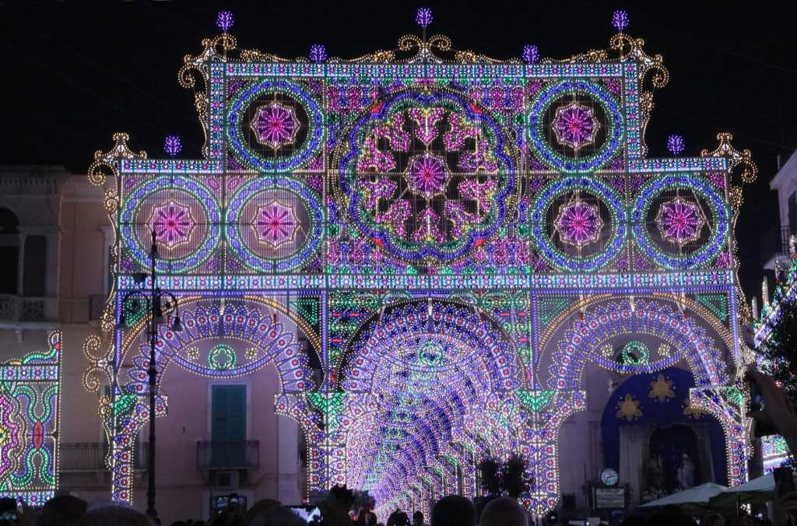

La festa patronale affonda le sue radici nella storia e nella tradizione religiosa della città di Fasano.
Nel corso dei secoli è diventata uno degli appuntamenti più attesi dai cittadini e dai turisti.
Le luminarie rappresentano uno degli elementi più spettacolari della manifestazione.
Le celebrazioni religiose si affiancano agli eventi civili, creando un'atmosfera unica che coinvolge persone di tutte le età.
Ogni anno migliaia di visitatori partecipano ai festeggiamenti.
La festa permette di conservare le tradizioni locali, rafforzare il senso di appartenenza alla comunità e far conoscere Fasano ai visitatori provenienti da tutta la Puglia.